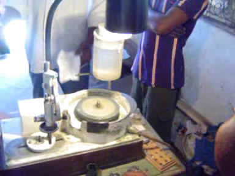
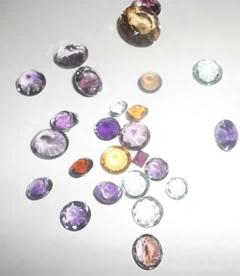
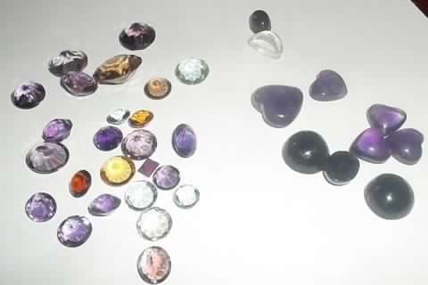
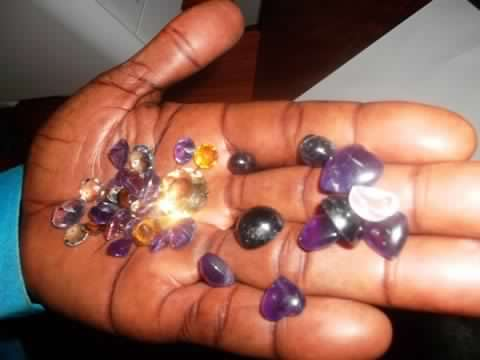

Services
La prospection, la recherche, l’exploitation minière, la taillerie, l’achat, la vente, l’évaluation et l’expertise des substances minérales précieuses et semi-précieuses ainsi que les hydrocarbures liquides et gazeux ;
Les opérations de Courtage, de Commission, de publicité, le service aérien, fluvial, terrestre, le tourisme et agence de voyage, le nettoyage industriel de bâtiment et location voitures ;
Les opérations financières, industrielles, agricoles, commerciales, mobilières et immobilières. Tous ces services que SODERCO SARL organise contribuent à l’épanouissement de la société et bien être de la population Congolaise.
La Taillerie
| Nous sommes en train de produire en s’adaptant à la technologie Occidentale (ou Américaine). La SODERCO SARL a une petite expérience dans la Taillerie des pierres précieuses et semi- précieuses, alors que nous avons la possibilité de produire ces pierres en très grande quantité dans nos propres Concessions. |

La plus part des pierres précieuses et Semi-précieuses sont d’une exploitation négligée, vu l’expérience, dans le domaine minier, de Monsieur Ali BINENE KAYEYE, ce dernier a voulu donner la valeur à ces pierres, c’est pourquoi il a eu le souci d’apporter et de s’investir dans la taillerie ici chez nous en République Démocratique du Congo afin de participer au progrès de l’exploitation et de la commercialisation.


